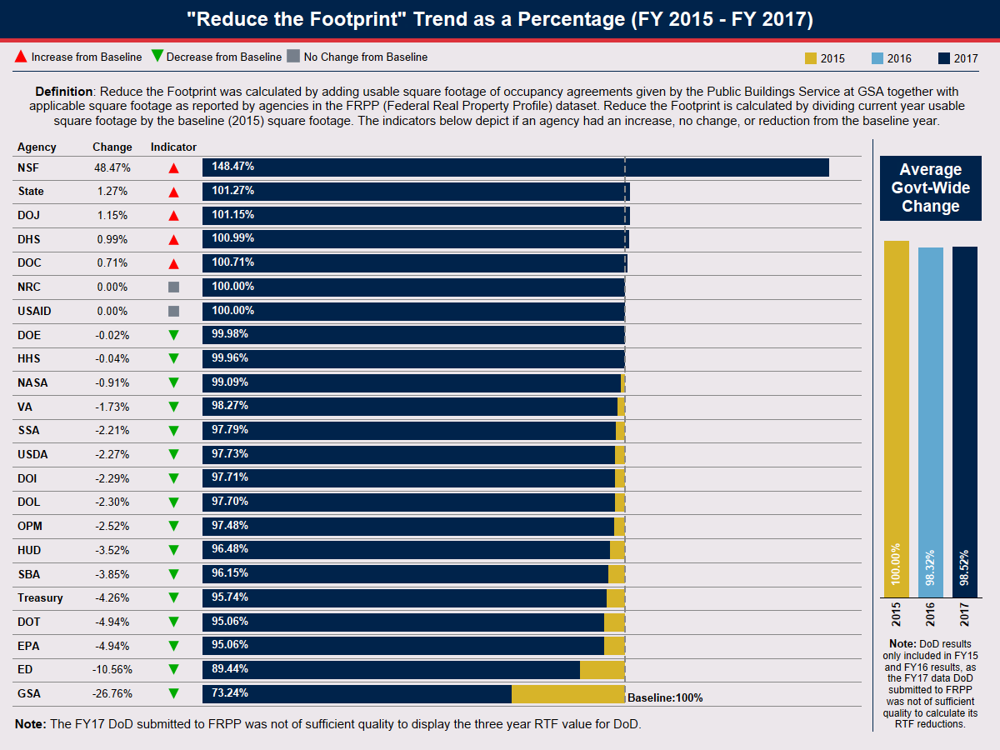

On March 25, 2015, OMB released the National Strategy for the Efficient Use of Real Property (National Strategy) and its companion policy, the Reduce the Footprint (RTF) policy. The National Strategy is a three-step framework to improve real property management: freeze growth in the inventory, measure performance to identify opportunities for efficiency improvements through data driven decision-making, and ultimately reduce the size of the inventory by prioritizing actions to consolidate, co-locate, and dispose of properties. Over time, application of the National Strategy and the RTF policy will improve the utilization of Federal Government-owned buildings, lower the number of excess and underutilized properties, and improve the cost effectiveness and efficiency of the government-wide portfolio.
OMB Memorandum No. 2015-01 issued the RTF policy. The policy requires the Chief Financial Officers (CFO) Act agencies to submit annual Real Property Efficiency Plans (Plan) to OMB that: (1) set annual square foot (SF) reduction targets for federal domestic buildings over a rolling five-year period; (2) adopt an office space design standard to optimize federal domestic office space usage; and, (3) maintain agencies’ office and warehouse portfolios below their fiscal year (FY) 2015 RTF baselines. Under the RTF policy, OMB has established government-wide policy to use property as efficiently as possible and to reduce agency portfolios though annual reduction targets. The policy is an impetus for real property management transformation that will provide value to the taxpayer.
In FY 2016, the CFO Act agencies targeted a net reduction of 4.3 million SF from the 668 million RTF SF office and warehouse baseline. The actual reduction achieved in FY 2016 was 11.2 million SF, more than double the original target.
The FY 2016 net reduction of 11.2 million SF builds upon the 24.7 million net SF reduction achieved under the Freeze the Footprint (FTF) policy between FY 2013 and FY 2015.
In FY 2017, the CFO Act agencies – not including the Department of Defense - targeted a net reduction of 3 million SF from the 668 million RTF SF office and warehouse baseline. The actual reduction achieved by the civilian CFO Act agencies in FY 2017 was 1.2 million SF. Note that RTF reduction numbers could not be calculated for DoD because the data it submitted to the Federal Real Property Profile was not of sufficient accuracy to support the calculation of its RTF portfolio relative to its RTF Baseline.
OMB and the U.S. General Services Administration (GSA) estimate that the 11.2 million SF reduction achieved in FY 2016 resulted in $104 million of annual cost avoidance through reduction to rent, operations, and maintenance costs. This builds upon the cost avoidance achieved under the FTF policy, which resulted in an estimated savings of more than $370 million annually.
OMB and GSA anticipate further net reductions to the RTF office and warehouse baseline and generation of significant cost avoidance in future years.
 Agency FY17 to FY21 RTF Reduction Targets and Results Government-wide Performance Metrics